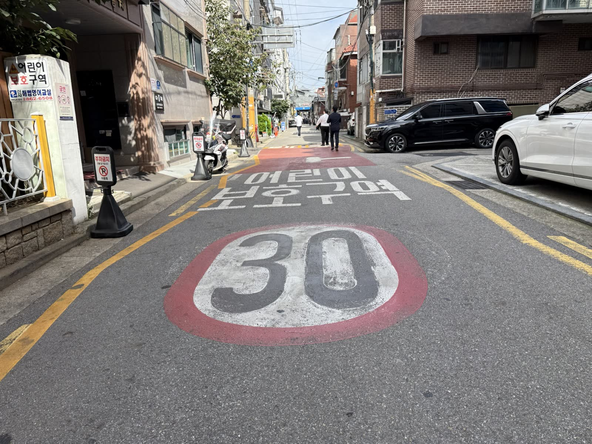
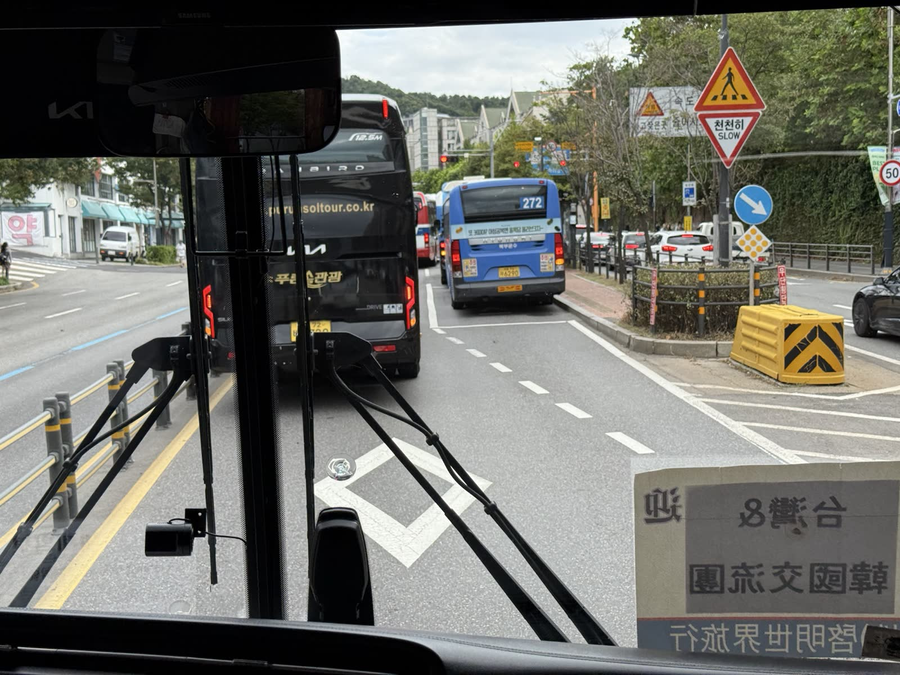
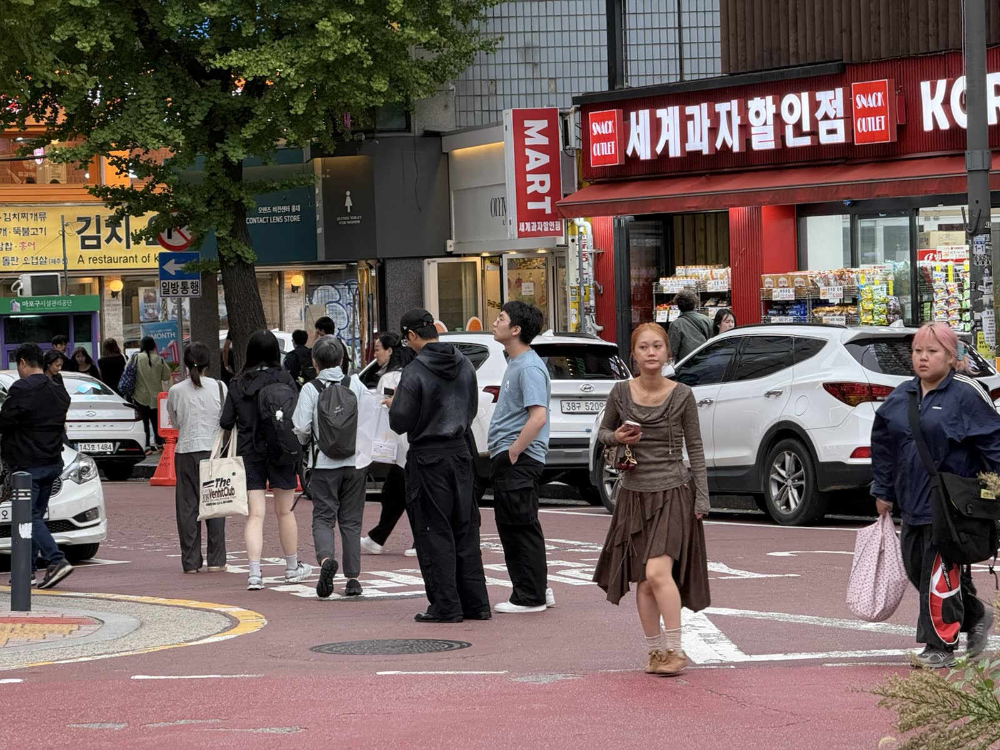

2026 年 9 月 · 韓國道路安全考察
畫面上的每一個點，是 2005 年一位在韓國道路上死去的人。往下捲，看到 2025 年少了多少。
資料：2005–2009 年韓國警察廳／道路交通公團 TAAS；2010–2025 年韓相鎮簡報 p.6 [1][3]
首爾 · 光化門一帶 · 2026.9.9
首爾大學環境大學院都市計畫學系（交通學）韓相鎮（Sangjin HAN）教授在 2026 年 9 月 9 日的簡報〈Road Safety Policies in Korea: Achievements and Future Tasks〉。本頁韓國的數據主要出自這份簡報，各段標註頁碼，完整出處列在頁尾。
一、成就 · 死亡人數 2010–2025
2010 年，韓國一年有 5,505 人死於交通事故，在 OECD 國家中屬於後段班。
資料：韓相鎮簡報 p.6（警察廳／道路交通公團統計）[1]
不只看死亡 · 受傷人數
2009 到 2023 年，台灣的 30 日死亡人數幾乎沒變（3,232 → 3,023），受傷人數卻從 24.6 萬增加到 54.0 萬，創下新高。同一段時間，韓國的受傷人數減少了兩成。
韓國人口約是台灣的 2.2 倍。換算成每十萬人，2023 年台灣約 2,300 人受傷，韓國約 550 人，相差四倍多。
* 台灣數據目前到 2023 年。
資料：台灣為監察院調查報告引用之交通部統計（2009–2023，30 日死亡與受傷）[2]；韓國 2009–2020 為警察廳／道路交通公團 TAAS [3][4]，2021–2025 為韓相鎮簡報 p.3 [1]；每十萬人換算用 2023 年人口 [5]。
國際比較
2013 年到 2020 年，韓國用比 OECD 先進國家更短的時間跨過同一段距離。每萬輛車死亡率從 2 降到 1.1 也只花 6 年，日本是 17 年。
資料：韓相鎮簡報 p.9–10（OECD 國家比較）[1]。年數依簡報表格；愛爾蘭箭頭圖寫 9 年、表格寫 8 年，此處採表格。
從 OECD 後段班走到中段。2016 年只有首爾、釜山、仁川三個市道優於 OECD 平均，2024 年增加到九個。
資料：韓相鎮簡報 p.4–5 [1]
二、Safe System 安全系統
「我們改變不了人性，但可以改變人所處的條件。」
James Reason · 韓相鎮簡報 p.14
用路人、車輛、道路各是一道防線，每一道都有洞：分心、超速、視線不良、設計缺陷。只要有一道擋住，事故就不會發生。
個人取向把責任推給犯錯的人：懲罰、再訓練、究責。系統取向承認人一定會犯錯，追問防線為什麼同時失效。
車與路無法把衝擊控制在人體能承受的範圍內時，就調降速限。這是瑞典 Vision Zero 的責任分擔：系統設計者為整體安全水準負責。
資料：韓相鎮簡報 p.14–17（瑞士起司模型、Vision Zero、Safe System）[1]
三、做對的事
2018 年 1 月，總統新年致詞把自殺、交通事故、職災死亡列為「保護國民生命三大計畫」，目標在 2022 年前把交通死亡從 4,292 人（2016）減半。國務調整室副首長每季開會檢查，各部會每兩個月回報一次。
資料：韓相鎮簡報 p.20 [1]
原本只有高速公路要求全座位繫安全帶，改為所有道路。違規罰駕駛 3 萬韓元。
資料：韓相鎮簡報 p.21 [1]
後座安全帶使用率
資料：韓相鎮簡報 p.23 [1]
酒駕死亡人數
資料：韓相鎮簡報 p.22、p.24 [1]
死者中 65 歲以上的比例（2010 → 2019）。高齡人口比例只有 15.4%。
2019 年 9 月忠南牙山學區事故後立法。學區增設測速照相、減速丘與號誌，取消路邊停車；在學區撞死兒童處無期徒刑或 3 年以上，罰鍰加重為 3 倍。
一年後：學區事故 567 → 483 件（−15%），死亡事故 6 → 3 件。
資料：韓相鎮簡報 p.25 [1]

首爾 · 學區路面「어린이 보호구역」與 30 速限標字
2021 年 4 月 17 日全國實施。口號是「速度降下來，行人就看得見」。警察廳、國土交通部、行政安全部共同成立「5030 協議會」，研究機構與學會組成諮詢團，並出版《安全速度 5030 設計運用手冊》。
資料：韓相鎮簡報 p.26 [1]

首爾 · 巴士車窗外的「천천히 SLOW」與 50 km/h 速限
2022 年《道路交通法》把「보행자우선도로」入法：速限 20 km/h 以下，或與步行速度相同；停車只能停在指定位置。手法以鋪面材質和色彩為主，不另外分隔人行道。
資料：韓相鎮簡報 p.29 [1]

首爾市區 · 整片紅色鋪面的行人優先路口
首爾奉恩寺路 · 5030 降速前後實測
降速最常聽到的反對是「會塞車」。首爾在奉恩寺路做了降速前後的實測：四個時段的旅行時間差異，在統計上都不顯著。
在路口停等的時間 在路段上行駛的時間 · 單位：秒，平均值
秒。四個時段降速前後的平均旅行時間差，統計上都不顯著。
傍晚尖峰（17–20 時），767 秒裡有 460 秒停在路口。白天時段也有 55% 以上。
km/h。這條路實際的空間平均速度。車子本來就跑不到 50，速限從來不是瓶頸。
要讓市區道路更有效率，該檢討的是號誌週期、時相和連鎖。這也是韓國接下來把號誌週期壓到 120 秒以內、改用行人等待時間當指標的原因。
資料：韓相鎮簡報 p.27–28，首爾奉恩寺路 5030 實施前後比較（樣本 24–61 趟）[1]；號誌週期與行人等待時間見 p.33。
現場 · 首爾與世宗
照片與影片為考察期間拍攝。
五、錢怎麼分 · 改善哪些路口
每個點是一件事故。大多數是受傷事故，死亡事故只占很小一部分。
死亡事故散落各處，很難看出哪個路口有問題。等到死亡發生才改善，通常已經晚了。
易肇事路段改善計畫的選點標準：廣域市 200 公尺內 5 件以上、其他城市 400 公尺內 3 件以上。受傷事故也算進去，問題路口提早浮現。
路網與事故點為示意；選點標準出自韓相鎮簡報 p.39 [1]
兩套改善計畫 · 2025 年預算
韓國有兩套道路改善計畫。地方與都市道路用事故件數選點，國道用加權評分排序，其中事故的部分用 EPDO（當量財損事故），把死亡與受傷事故依嚴重程度換算成同一個單位。
道路交通公團（KoROAD）選點，國土交通部改善國道、行政安全部改善地方道路。
| 類型 | 地區 | 門檻 | 範圍 |
|---|---|---|---|
| 地點 | 廣域市 | 5 件以上 | 都市道路 200 m 內 |
| 其他城市 | 3 件以上 | 其他道路 400 m 內 | |
| 路段 | 廣域市 | 17 件以上 | 1 km 以上路段 |
| 其他城市 | 8 件以上 | 1 km 以上路段 |
國土交通部自行選點並改善國道，以 100 分評分排序。
道路幾何包括曲率半徑、路況、視距、縱坡、車道寬與路肩寬。
易肇事路段改善計畫的流程，最後一步由選點的同一個單位評估成效。
的死亡發生在地方政府管理的道路上（2020 年：地方道路 2,300 人、國道 781 人）。
易肇事路段改善預算：國道每公里 251 萬韓元，廣域市道與地方道路每公里只有 3.3 萬韓元。韓相鎮教授建議提高對地方政府的補助，並評比地方政府與地方警察的道路安全績效。
濟州自治警察 2024 年接手測速照相，449 台的罰款進入濟州地方帳戶。2026 年的 163 億韓元用在學區與銀髮區安全設施、智慧行人穿越道、易肇事路段改善，以及汰換老舊號誌。
資料：韓相鎮簡報 p.37（地方道路與預算）、p.39–40（選點標準與流程）、p.44（濟州）[1]
四、還沒做完的事
死亡人數連續三年持平。韓相鎮教授點出的未來課題，大多落在地方政府管的路、住宅巷道和行人穿越。
首爾的事故發生在寬度不到 12 公尺的道路上，占死亡加重傷的 46.3%。住宅區要做 30 km/h 交通寧靜、停止路口和行人優先道路。
資料：韓相鎮簡報 p.38 [1]
iRAP 每車公里死傷成本（美元）：每升一顆星，風險約減半。聯合國目標是 2030 年前新建道路都達 3 星以上。
資料：韓相鎮簡報 p.36，引用 iRAP 與聯合國道路安全全球目標 [1]
路口號誌週期原則上不超過 120 秒，一個週期給兩次行人時相；以平均行人等待時間作為績效指標，依步行速度設定號誌連鎖。
資料：韓相鎮簡報 p.33，引《安全速度 5030 設計運用手冊》[1]
很多穿越道超過 70 公尺，高齡者難以一次走完。FHWA 研究指出庇護島可減少 32% 行人事故；行人觸動號誌在英國減少 30% 事故。
資料：韓相鎮簡報 p.31，引美國 FHWA 與英國經驗 [1]
給台灣的對照
台灣的死亡人數十幾年持平，受傷人數卻翻倍到 54 萬。只追死亡，會看不到這個趨勢。
奉恩寺路的實測顯示，市區道路的時間花在路口。要談效率，該檢討的是號誌時制，不是速限。
韓國用 200 公尺內的事故件數找出問題路口，受傷事故也算；國道再用 EPDO 依嚴重度加權。不必等到有人死亡才改善。
75% 的死亡在地方道路，每公里預算卻只有國道的 1/76。台灣的縣市道路可能也是類似結構。
沒有人行道的巷子，用法律加重駕駛責任、用鋪面讓人看得懂。對照台灣的人本巷弄與標線型人行道。
濟州自 2024 年接手測速照相，罰款進入地方帳戶，2026 年 163 億韓元用在學區、銀髮區與智慧穿越道。
依本頁各段資料整理，出處見頁尾 [1]–[5]。